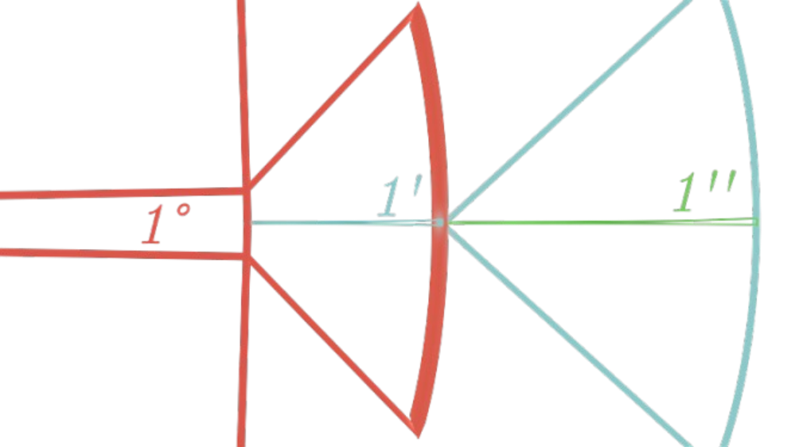
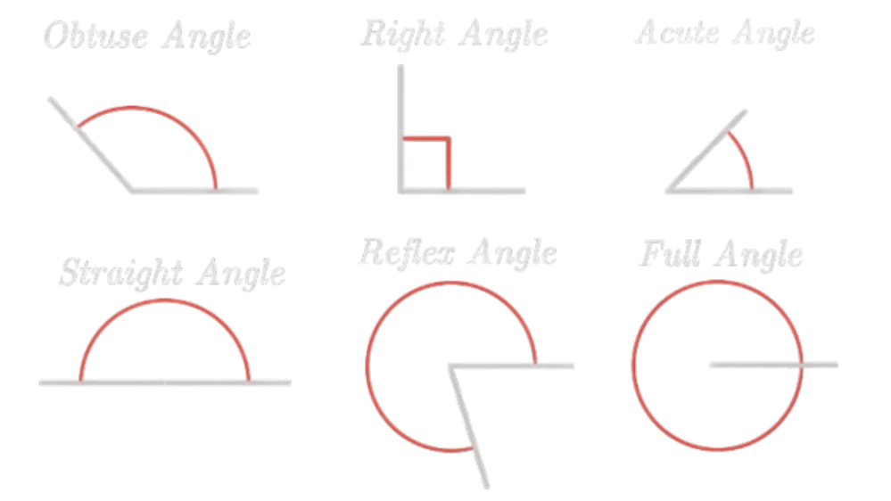

1 Degree, 1 Minute, 1 Second visualized
The most common unit for an angle/a rotation is the degree, originating from the Babylonians, defined arbitrarily as
360° being a full rotation, most likely chosen to simplify calculations using their sexagesimal system (base 60).
We have already met angles as describing the change in inclination between two lines, however we can also make an angle when rotating. For example, when standing
at the origin of the cartesian plane if we rotate by, say, 90°, then we rotate by 90° counter-clockwise, meaning we'd end up facing the positive y-axis.
If we consider a negative angle it simply means that we rotate clockwise.
One degree can further be subdivided into minutes and seconds. One degree equals 60 minutes, written: \(1° = 60'\).
A minute can then further be subdivided into 60 seconds, so \(1' = 60''\), and because of that \(1° = 60' = 3600''\).
These are used to be more precise with measurements and calculations when, for example, measuring things that are very far away, be it kilometers
or several astronomical units. In a later chapter we will explain how to and indeed use these small angles to determine the
distance from earth to our nearest star (that isn't the sun).
Alongside the degree exists the gradian, or gon, which you might have seen on your calculator as an option for an angle unit.
A gon is the degree equivalent for the base 10 system. A full rotation is 400 gon or \(400^g\), so a 90° angle is \(100^g\).
Therefore, one gon is equal to 0.9°.
Example: Convert 16° to minutes, seconds and gradians.
Solution: \(16° \cdot 60 = 960'. 960' \cdot 60 = 57600''\). \(1^g = 0.9°\) Divide both sides by 0.9 to get \(1° = \frac{1}{0.9}^g\), so \(\frac{16°}{0.9} \approx 17.78^g\).
However, all of these units are completely invalid in mathematics, since they have
no relation to any sort of geometry at all, they were defined completely arbitrarily, so what is the definition of an angle
in math/geometry?
We already know that the ratio of the circumference of a circle to its radius is \(2\pi\), which is how we will
define a full rotation. The unit for this rotation is the radian, so \(2\pi\) radians, or \(2\pi \: rad\) corresponds to a full rotation.
If we want to convert from radians to degrees, let's first find what one degree is equivalent to. Since both 360° and \(2\pi \: rad\) corresponds to a full rotation, they are equal.
So: \(360° = 2\pi \: rad\). If we want to find how many radians is one degree, we need to divide both sides of the equation by 360.
Then we get: \(1° = \frac{2\pi}{360} rad = \frac{\pi}{180} rad\). So, to convert from degrees to radians multiply with \(\frac{\pi}{180}\).
On the other hand tho, to get from radians to degrees, let's first divide by \(2\pi\) to get: \(\frac{360°}{2\pi} = 1 \: rad\).
Therefore, \(1 \: rad = \frac{180°}{\pi}\), so to get from radians to degrees multiply with \(\frac{180}{\pi}\). We always write radians as
multiples of pi unless mentioned otherwise.
Example 2: How many radians is a quarter rotation?
Solution: 1.) Divide a full rotation by four, so \(\frac{2\pi}{4} = \frac{\pi}{2}\). Or use the angle to radian formula with 90°.
\(90° \cdot \frac{\pi}{180} = \frac{\pi}{2}\).
Example 3: Convert \(\frac{\pi}{6}rad\) to degrees, minutes and gons.
Solution: \(\frac{\pi}{6}\cdot \frac{180}{\pi} = \frac{180}{6} = 30°\).
Get very used to using radians, as you should never/will rarely work with anything other than radians in the future in math.
It also might seem unintuitive for a full rotation to be \(2\pi\), while a half rotation is \(1\pi\), where as people would think of
one full rotation and a half rotation. Thus, some people used the greek letter "tau" (\(\tau\)) which is equal to \(2\pi\), in which case a full rotation is
\(\tau \: rad\), and a half rotation is \(\frac{\tau}{2} \: rad\), therefore \(\tau\) represents a full rotation and is more intuitive to work with (but not very widely used
which is also why I will use \(\pi\) instead of \(\tau\)).
We also differentiate between different types of angles that occur in geometry based on their magnitude as given in the following table.

Types of Angles
\begin{array}{|c|c|}
\hline
Angle & Name \\
\hline
<90° & acute \ angle\\
90° & right \ angle\\
>90° & obtuse \ angle\\
180° & straight \ angle\\
>180° & reflex \ angle\\
360° & full \ angle\\
\hline
\end{array}
Furthermore, notice that if you rotate a full rotation it will have the same effect as not having rotated at all. In general,
for every rotation the overall effect is the same as the remainder of the rotation modulo 360°.
Angles which have the same overall effect are called coterminal angles.
Example 4: Find two coterminal angles of 72°.
Solution: Although there are infinite solutions, we just need to find two, so let's simply find the nearest coterminal angle that
we get to after moving clockwise and counter-clockwise respectively. A full counter-clockwise rotation is 360°, while a clockwise rotation is -360° so:
72° + 360° = 432° is one coterminal angle, while 72° - 360° = -288° is another coterminal angle.
From now on we must also consider formulae using only radians. Even though I should've led with this, I will end this section
with going over radians once more. The maths definition of an angle \(\theta\) is: \(\theta = \frac{s}{r}\), where s is
the arc length of a circle and r the radius of that circle. Notice that when the arc length is the circumference of the circle
then the angle is \(\theta = \frac{2\pi r}{r} = 2\pi\) which is a full rotation, as we would expect.
Lastly we will reformulate the formula for the area of a sector of a circle using radians. We already established
that \(A = \frac{\theta}{360°}\pi r^2\) where \(\theta\) is in degrees, however let's convert both \(\theta\) and 360° to radians to get:
\(A = \frac{\theta}{2\pi}\pi r^2\) which simplifies to \(A = \frac{1}{2}r^2 \theta\).
Example 5: Find the area of a sector subtended by \(\frac{\pi}{4} \: rad\) of a circle by radius 40cm and write it in square decimeters.
Solution: \(A = \frac{1}{2}(40cm)^2 \cdot \frac{\pi}{4} = 200\pi \: cm^2 = 2\pi \: dm^2\).
Lastly, as a side note, always check that your answer makes sense logically. For example, a blatant error would be
if the quest was to find the area of a sector subtended by a rotation of -30°. While this simply means a rotation of 30° in the
clockwise direction, plugging this into the equation would give you a negative area, so you must use the absolute value of the angle.
Also note that the area sector formula only works for angles between 0-2\(\pi\). If you are given an angle not in this interval then you must
find the coterminal angle which is in the interval (Exercise 10).
\( \begin{array}{l} 1.) \frac{\pi}{3} & 6.) \pi, -\pi, 3\pi \\ 2.) 111.11^g & 7.) 225^g, -175^g, 625^g \\ 3.) 324° & 8.) A = 168\pi mm^2 \\ 4.) \frac{3\pi}{2} = 270° = 300^g & 9.) \frac{169}{20}\pi m^2\\ 5.) 12°, -348°, 372° & 10.) \theta > 2\pi, \text{so we must find a coterminal angle}, \theta = \frac{3\pi}{2} \to A = 54\pi m^2 \\ \end{array} \)